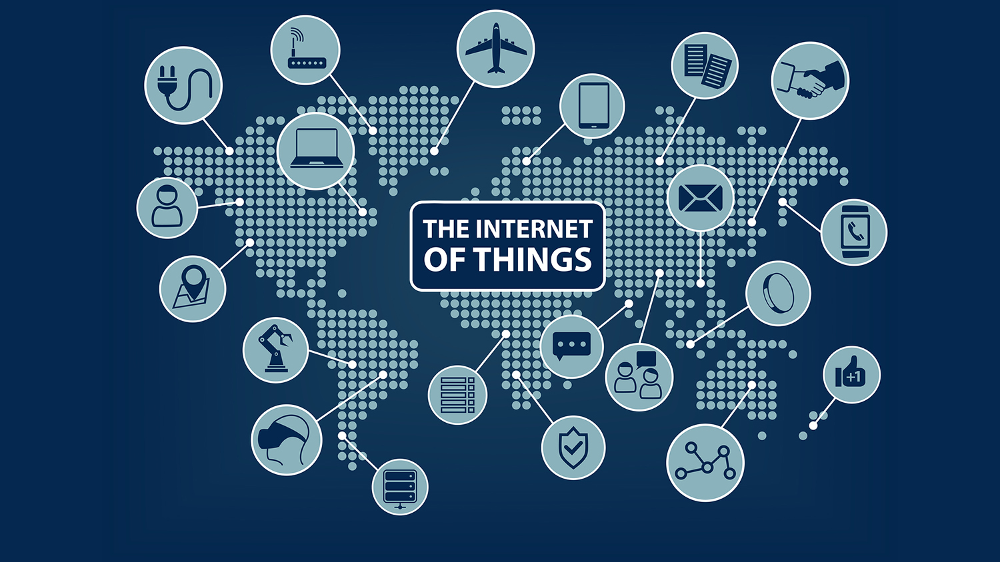

ইন্টারনেট কি?

পরিবেশের সাথে খাপ খাওয়ার জন্য আমরা দিন দিন আপডেট ডিভাইস ব্যবহারের পরিমাণ বাড়িয়ে চলেছি। আমরা সবাই চাই সব কিছুর ই উন্নয়ন। তবে মজার ব্যাপার হলো আমরা নিজেদের আপডেট/উন্নয়ন করতে রাজি না। আমরা নিজেদের ডিভাইস গুলো সব সময় আপডেট রাখতে চাই। কথা না বাড়িয়ে কাজের কথায় আসা যাক। আমার আজকের আলোচ্য বিষয় হচ্ছে ইন্টারনেট। আমাদের সকলের অত্যন্ত প্রয়োজনীয় একটি উপকরণ হচ্ছে ইন্টারনেট। ইন্টারনেট ছাড়া আমাদের সময় যেন যেতেই চায় না। আমাদের ডিভাইস গুলোকে আমরা আপডেট রাখি এই ইন্টারনেটের মাধ্যমেই আবার যোগাযোগ ব্যাবস্থার ও উন্নয়ন হয়েছে ইন্টারনেটের অগ্রগতির জন্যই। এবার জানা যাক ইন্টারনেট আসলে কি?
ইন্টারনেট হচ্ছে কম্পিউটার নির্ভর বৈশ্বিক তত্ত্ব পদ্ধতি। অনেকগুলো কম্পিউটার কেন্দ্রিক নিরবিচ্ছিন্ন নেটওয়ার্কের সমষ্টিই হচ্ছে ইন্টারনেট।
একট উদাহরণ দেয়া যাক। মনে করি রাকিব এবং সাকিব দুজন খুব ভাল বন্ধু। রাকিব এবং সাকিব দুজন চায় তারা তাদের প্রয়োজনীয় ফাইল গুলো একে অপরের সাথে আদান প্রদান করবে। যেই ভাবা সেই কাজ আধুনিক পোলাপাইন বলে কথা। তারপর দুজন বাজারে গেল এবং ৩০০ মিটার ইন্টারনেট ক্যাবল কিনে নিয়ে আসলো। তারপর তারা ক্যাবলের দু প্রান্তে দুটি কানেক্টর পিন লাগালো এবং ক্যাবলের দু প্রান্ত তাদের দুজনের কম্পিউটার সাথে সংযুক্ত করল। তারপর তারা কিছু সেটিংস আপডেট করল এবং নেটওয়ার্কিং এর মাধ্যমে তাদের ফাইল গুলো আদান প্রদান করা শুরু করল।
বিষয়টা আসলে এমনি। পুরো বিশ্বের নেটওয়ার্কিং প্রসেস আসলে এভাবেই চলে অর্থাৎ ফাইবার ক্যাবলের মাধ্যমে। এখন প্রশ্ন আসতে পারে, হ ভাই সবই ত বুঝলাম কিন্তু একটা বিষয় ত মাথার উপর দিয়া যাচ্ছে বিষয় টা হলো আমরা যে মোবাইলে ইন্টারনেট ব্যবহার করি সেটাতে ত কোন ফাইবার ক্যাবল সংযুক্ত করা নাই। তাহলে ক্যামনে কি?
অসাম প্রশ্ন। মোবাইলে ফাইবার ক্যাবল যুক্ত করা নাই ঠিকই। কিন্তু আমাদের গ্রামীন ফোন বা বাংলালিংক অথবা সাধের রবি তাদের নিজেদের নেটওয়ার্কিং টাওয়ার তো আমাদের দেশের আনাচে , কানাচে, গ্রামে, গঞ্জে পাড়ায় , পাড়ায় এমনকি আবাদি জমি গুলাকেও বাদ রাখে নাই, যেখানে সুযোগ পাইছে বসাইছে। এই টাওয়ার গুলার কাজ হচ্ছে আমাদের ফ্রিকুয়েন্সি পাঠানো, মানে তরংগ আর কি। উচু উচু তালগাছের চেয়ে লম্বা টাওয়ার গুলা তো হুদাই দাঁড়িয়ে নেই তাই না?!! ওগুলারো কিছু কাজ আছে আর ওদের কাজই হচ্ছে তরংগ ছড়ানো। আর টাওয়ার গুলাতে লক্ষ্য করলে আমরা দেখব অসংখ্য ক্যাবল লাগানো আছে। মানে টাওয়ার গুলা ক্যাবলে আসা ডেটা গুলো তরংগে রুপান্তরিত করে এবং আমাদের মাঝে বিলিয়ে দেয়। বাহ !! কতই না দয়ালু তাই না?!! মোটেও দয়ালু না। টাকা কিন্তু ঠিকই নেয়।
আশা রাখি মোবাইল নেটওয়ার্কিং এর বিষয়টা হালকা বুঝতে পেরেছেন। সবশেষে বলে রাখি, ইন্টারনেট কিন্তু বিনামূল্যের। এখন আপনাদের মনে প্রশ্ন জাগতে পারে তাহলে আমাদের টাকা দিয়ে ইন্টারনেট কিনতে হয় কেন? উত্তরে বলব, সেটা ক্যাবল খরচ এবং ইন্টারনেট প্রভাইডার বা ডিভাইস গুলোর খরচ বিনা মূল্যে ইন্টারনেট চালানো প্রায় অসম্ভব।
আপনারা যদি সারাবিশ্বের সাবমেরিন ক্যাবলের MAP দেখতে চান তাহলে নিচের লিংকে ক্লীক করুন।
ওয়েব এবং নেটের মধ্যে পার্থক্যঃ
আমাদের অনেকেরই ধারণা যে ওয়েব এবং ইন্টারনেট একই জিনিস । কিন্তু বাস্তবতা কিন্তু আলাদা কথাই বলে। তাহলে জেনে নেই বাস্তবতা আসলে কি বলে?
নেট/ ইন্টারনেটঃ
নেট/ ইন্টারনেটঃ ইন্টারনেট নিয়ে আগের পোস্টেই আলোচনা করেছি তবুও আবার বলি, ইন্টারনেট বা নেট হচ্ছে দুটি অথবা একাধিক কম্পিউটারের একটি বিশাল নেটওয়ার্ক যা সারা বিশ্বে ছড়িয়ে ছিটিয়ে রয়েছে। আমরা জিমেইল, মেসেঞ্জার সহ অনেক মাধ্যম ব্যবহার করি যোগাযোগের জন্য। আপনি কাউকে মেইল পাঠাইলেন এর মুলে কিন্তু ইন্টারনেট রয়েছে। অর্থাৎ আপনি যে মেইল সেন্ড করলেন আপনার বন্ধুকে সেটা কিন্তু কোন না কোন মাধ্যেমে আপনার বন্ধুর কাছে পৌছেছে। আর যে মাধ্যমে পৌছেছে সেটা হচ্ছে ইন্টারনেট।
ওয়েব কি?
ওয়েব বা ওয়ার্ল্ড ওয়াইড ওয়েব হচ্ছে একটি সুবিশাল তথ্যের ভান্ডার। যেখানে অসংখ্য ডকুমেন্টস, ফাইলস, ছবি, অডিও, ভিডিও ইত্যাদি রয়েছে। এখন প্রশ্ন আসতে পারে যে, ওয়েব এ যে এত্তকিছু আছে সেগুলো কিভাবে আছে ? বা কার মধ্যে আছে? অনেক ভাল প্রশ্ন। ওয়েব এ যা কিছু থাকে তার জন্য প্রয়োজন হয় একটি ভাল গতি সম্পন্ন ডেটা সেন্টার। যেখানে অসংখ্য সার্ভার থাকে। আর প্রতিটি সার্ভারে কয়েকশত হার্ডডিস্ক থাকে। আর তথ্য গুলো সার্ভারে / হার্ড ডিস্কে জমা থাকে। আমরা যখন ইন্টারনেট ব্রাউজারে ফ্লোয়ার লিখে সার্চ দিই তখন যে সার্ভারে ফুলের ছবি আছে সে সার্ভার সাথে সাথে ফুলের ছবিগুলো ব্রাউজারকে পাঠিয়ে দেয় এবং আমরা রেজাল্ট হিসেবে ফুলের ছবি দেখতে পারি। আশা করি বিষয়টা বুঝতে পেরেছেন। ইন্টারনেট খুব গুরুত্বপুর্ণ একটি জিনিস যার গুরুত্ব দিন দিন বেড়েই চলেছে। মানুষ এখন তাদের অনুভূতি এবং তাদের পছন্দ অপছন্দ গুলো ওয়েব সাইটে সেয়ার করতে পছন্দ করে। যেমন আমরা যে ফেসবুক ব্যবহার করি সেটাও কিন্তু একটা ওয়েব সাইট। সেখানে আমরা আমাদের পছন্দ অপছন্দ তুলে ধরি। আমাদের ছবি, ভিডিও , অনুভুতি সব কিছুই আমরা ফেসবুকে সেয়ার করতে পারি। আবার অনেকে আছেন যারা ব্যাক্তিগত ওয়েব সাইটে তাদের আইডিয়া সেয়ার করেন। আবার তাদের গবেষণা ও সেয়ার করেন। আর এই ব্যাক্তিগত ওয়েব সাইট গুলো অনেকভাবে আমাদের সাহায্য করে থাকে।
ব্যান্ডউইথ থ্রোটলিং কি? ইন্টারনেট স্পীড স্লো হয়ে যায় কেন?
আমরা টাকা খরচ করে অনেকেই ব্রডব্যান্ড লাইন নেই বা ওয়াফাই লাইন নেই। লাইন নেই কোন কাজ থাকে বলেই। অবশ্য অনেকের কাজ নাও থাকতে পারে । সে যাই হোক। আমরা তো প্রতিমাসে বা নির্দিষ্ট একটা সময়ে ঠিকি টাকা পেইড করি। কিন্তু অনেক সময় দেখা যায় যে আমরা কাংখীত স্পীড পাই না। এর মূল কারণ হচ্ছে “ব্যান্ডউইথ থ্রোটলিং” । এবার ব্যান্ড উইথ থ্রোটলিং সম্পর্কে জানা যাক।
ব্যান্ডউইথ থ্রোটলিংঃ
সহজভাবে বলতে গেলে, ব্যান্ডউইথ থ্রোটলিং হচ্ছে, আপনি ইন্টারনেটে কোন কিছু কত দ্রুত এক্সেস করতে পাড়বেন তার উপর লিমিটেশন। মনে করুন আপনি যেখান থেকে ইন্টারনেট কানেকশন নিয়েছেন ফাইবার/ ক্যাট সিক্স ক্যাবল দিয়ে সেখান থেকে যতটুকু স্পীড পাওয়ার কথা তার থেকে একটু কম বা অনেক বেশি কম পাচ্ছেন তাহলে সেটাকে বলে ব্যান্ডউইথ থ্রোটলিং । অর্থাৎ আপনি যেখান থেকে ইন্টারনেট কানেকশন নিয়েছেন সেখানে ব্যান্ডউইথ থ্রোটলিং করা হচ্ছে, ফলে আপনি স্পীড কম পাচ্ছেন। ব্যান্ডউইথ থ্রোটলিং কে ডেটা থ্রোটলিং (Data Throttling) বা ইন্টারনেট বাটলনেক (Internet Bottleneck) ও বলা হয়ে থাকে।
ধরুণ, আপনি ৫ মেগাবিট/সেকেন্ড ইন্টারনেট ব্যান্ডউইথ স্পীডের জন্য আপনার আইএসপি কে টাকা প্রদান করেছেন, কিন্তু , সমস্যা হচ্ছে দিনের বা রাতের একটা নির্দিষ্ট পর্যায়ে যেয়ে দেখলেন যে আপনি নির্দিষ্ট স্পীড পাচ্ছেন না। হয়ত কোন ওয়েব সাইট ব্রাউজ করতেছেন কিন্তু স্পীড নেই। এ ক্ষেত্রে আপনাকে যেটা বুঝতে হবে সেটা হচ্ছে আপনার আই এস পি অবশ্যই আপনার সাথে ডেটা থ্রোটলিং করেছে। এছাড়া বিভিন্ন ভাবে ডেটা থ্রোটলিং করা হয়ে থাকে। যেমনঃ আপনি ফেইসবুক ব্রাউজ করতেছেন বা অন্য কোন ওয়েব সাইট ব্রাউজ করতেছেন তো দেখলেন যে স্পীড খুব একটা বেশি নেই । আবার তখনই আপনি ইউটিউবে ভিডিও দেখা শুরু করলেন এবং দেখলেন স্পীড অনেক ভাল পাচ্ছেন। এ ক্ষেত্রে আই এস পি আপনার ফেইসবুকের / ওয়েব সাইটের ডেটা থ্রোটলিং করেছে। এছাড়া আরো অনেকভাবে ডেটা থ্রোটলিং হয়ে থাকে।
আই এস পি বা ইন্টারনেট প্রোভাইডাররা কেন ডেটা থ্রোটলিং করে?
আপনি সাধারণ ভাবে যদি চিন্তা করেন যে আই এস পি রা কেন ডেটা থ্রোটলিং করে থাকে তাহলে কেবল একটা বিষয় ই হয়ত মাথায় উকি দিবে। অবশ্য আপনাদের মাথায় উকি ঝাকি নাও দিতে পারে । আমার মাথায় ঠিকি উকি দিচ্ছে, আর সেটা হলো ডেটা থ্রোটলিং করে অবশ্যই তারা লাভবান হয় নয়ত ডেটা থ্রোটলিং করবে কেন? হ্যা সত্যিই তাদের অনেক লাভ হয়। কারণ আমরা জানি , বেশির ভাগ সময় দিনের বেলা আমাদের ইন্টারনেটের প্রয়োজন পড়ে আর তাই দিনের বেলায় ইন্টারনেট ব্যবহারকারীও অনেক বেড়ে যায়। ফলে এত্তগুলো ব্যাবহারকারীদের নিয়ন্ত্রণ করার জন্য আলাদা কিছু যন্ত্রের প্রয়োজন হয়। কিন্তু তাদের যাতে সে যন্ত্রপাতি কিনতে না হয় সে জন্য তারা ডেটা থ্রোটলিং করে থাকে । যাতে সকল ইউজাদের একটা সীমার মধ্যে রাখা যায়।
ওয়েব সার্ভার কি?
সার্ভার হচ্ছে একটি প্রোগ্রাম বা সফটওয়ার যেটি হাইপার টেএক্সট ট্রান্সফার প্রোটকল বা (http) এর সাহায্যে কাজ করে ওয়েব পেইজ গুলো ইউজারদের কাছে পৌছে দেয়। ওয়েব সার্ভার কিভাবে কাজ করে? মনে করুন আপনি আপনার কম্পিউটারে/স্মার্ট ফোনে থাকা ইন্টারনেট ব্রাউজার ব্যবহার করে একটি ওয়েব সাইটে ভিজিট করলেন। উদাহরণ হিসেবে আমি ধরে নিলাম আপনি ফেসবুক ব্রাউজ করবেন। তো যেই ভাবা সেই কাজ। আপনি ইন্টারনেট ব্রাউজার ওপেন করলেন এবং সার্চ বারে লিখলেন http://www.facebook.com। তারপর আপনি দেখলেন একটু পর আপনার কম্পিউটার/ স্মার্ট ফোনের পর্দায় ফেসবুকের হোম পেইজ দেখতে পাবেন।(যদি পুর্বে থেকেই লগ ইন করা থাকে) । তারপর আপনার ইচ্ছে মতো আপনি ফেসবুকের বিভিন্ন পেইজে ভিজিট করতে লাগলেন। কিন্তু, আপনি কি ভেবেছেন? এর পেছনে কি কি ঘটে? মানে , আপনি যে সার্চ দিলেন সার্চবারে http://www.facebook.com লিখে । সাথে সাথে আপনি ফেসবুকের হোম পেজ/ লগ ইন ইন্টারফেস পেয়ে গেলেন!! কিন্তু কিভাবে পেলেন? কোথা থেকে আসলো সেটা কি জানেন? আসুন তাহলে জেনে নেয়া যাক। আপনি যখন ইন্টারনেট ব্রাউজারের সার্চবারে কোন লিং লিখেন তখন ব্রাউজার সেই লিংটিকে তিন ভাগে বিভক্ত করে। প্রথমে এটি প্রোটকলের (http) দিকে নজর দেয়। তারপর সার্ভার নেইম অর্থাৎfacebook.com কে খোজার চেষ্টা করতে থাকে।
প্রথমত, ব্রাউজার নেম সার্ভারের কাছে সেই সার্ভারটির আইপি এড্রেস জানার চেষ্টা করে, আইপি পাওয়ার সাথে সাথে সেই সার্ভার মেশিনের সাথে আপনার ব্রাউজারটির সম্পর্ক স্থাপন করার চেষ্টা করে এবং পোর্ট ৮০ তে কানেক্ট করে। একটি আইপির সাথে আসলে অনেক পোর্ট থাকে। ধরুন, আমি সার্ভারের কাছে ব্রাউজারের দিয়ে এইচটিটিপি এর মাধ্যমে কোন ফাইল বা পেইজের জন্য রিকোয়েস্ট করলাম যে, আমাকে এই পেজ বা ফাইল টা দেখাও। তাহলে সে সরাসরি সার্ভারের পোর্ট ৮০ তে কানেক্ট করাবে আমার ব্রাউজারকে। আবার আমি যদি ব্রাউজার দিয়ে এফটিটিপি এর মাধ্যমে সার্ভারকে কোন ফাইল বা পেইজের জন্য রিকোয়েস্ট করি তাহলে সার্ভার ব্রাউজারকে পোর্ট ২১ এর সাথে কানেক্ট করবে। পোর্ট টা হচ্ছে গেইট বা দরজার মতো । সার্ভারে অনেক পোর্ট বা ভার্চুয়াল দরজা থাকে। আপনি কোন দরজা দিয়ে ওয়েব সার্ভারে প্রবেশ করবেন সেটা ব্রাউজারকে বলে দিতে হবে।
তারপর এবার ব্রাউজার আইপি এড্রেস আর সঠিক পোর্টের সাথে কানেক্ট করার পর সার্ভারকে বলে যে আপনার সার্ভারে কি ফেইজবুক নামের কোন পেইজ বা ফাইল আছে কি? তখন সার্ভার বলে হ্যা আছে তো! এবং সার্ভার ব্রাউজারকে ফেইবুকের হোম পেইজ দিয়ে দেয় এবং সাথে সাথে ব্রাউজার আপনাকে হোম পেজ প্রদর্শন করে। পুরো বিষয়টা বুঝতে একটু বেশি সময় লাগল কিন্তু কাজ টা হয় কিন্তু খুব দ্রুত।